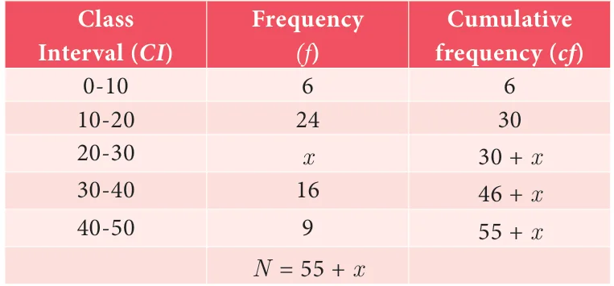
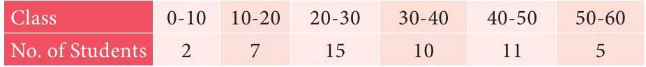

\(= 2000 +\) (10054- 74) # 1000
\(= 2000 +\) ( 5426) # \(1000 = 2000 + 481.5 = 2481.5\)

Solution

Since the median is 24 and median class is \(20 - 30\)
\(l = 20 N = 55 + x\), \(m = 30\), \(c = 10\), \(f = x\)
Median \(= l \frac{N}{2}\) c
m
\(24 = 20\) 552 x 30 10

\(x 5x - 25\)
\(4 =\) (after simplification)
\(4x = 5x - 25\)
\(5x - 4x = 25 x = 25\)

- Find the median of the given values : 47, 53, 62, 71, 83, 21, 43, 47, 41.
- Find the Median of the given data: 36, 44, 86, 31, 37, 44, 86, 35, 60, 51
- The median of observation 11, 12, 14, 18, x+2, x+4, 30, 32, 35, 41 arranged in ascending order is 24. Find the values of x.
- A researcher studying the behavior of mice has recorded the time (in seconds) taken by each mouse to locate its food by considering 13 different mice as 31, 33, 63, 33, 28, 29, 33, 27, 27, 34, 35, 28, 32. Find the median time that mice spent in searching its food.
- The following are the marks scored by the students in the Summative Assessment exam

Calculate the median.
- The mean of five positive integers is twice their median. If four of the integers are 3,
4, 6, 9 and median is 6, then find the fifth integer.